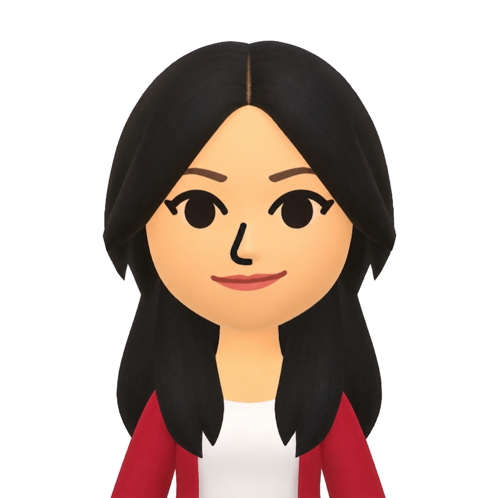
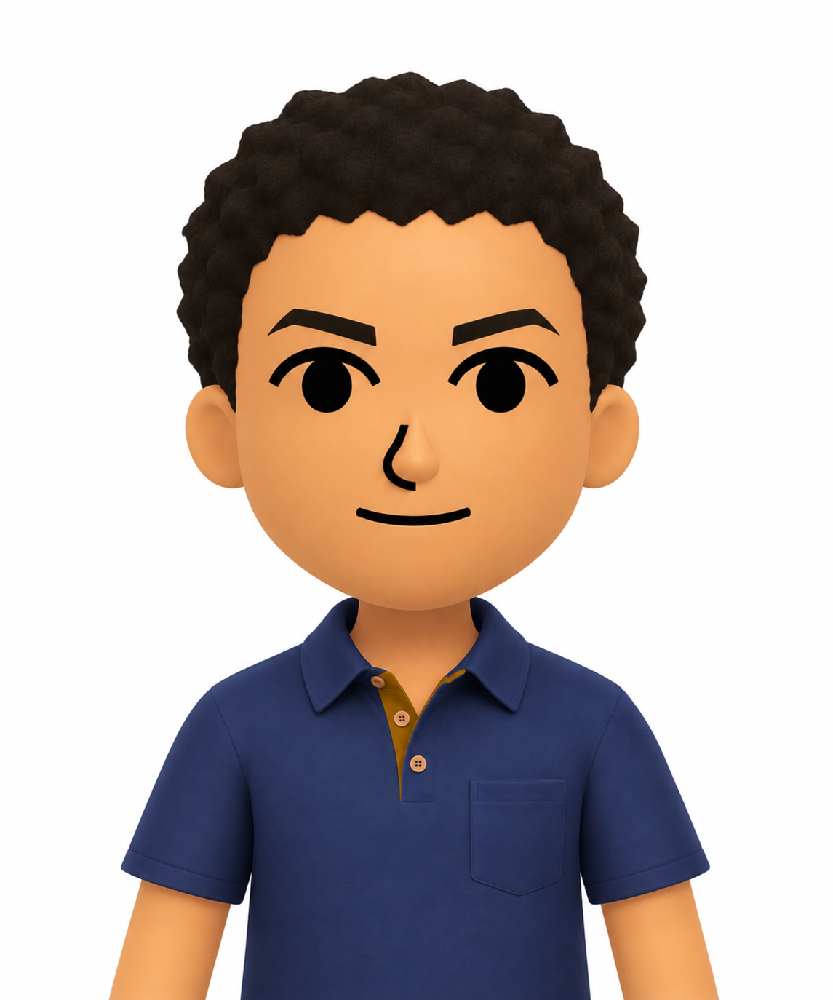
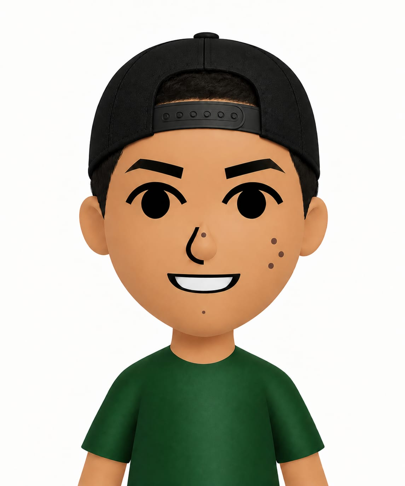

Coordinación y marca
Encargada de la página de presentación del equipo y del desarrollo de la identidad visual del sitio mediante el logo.
Somos tres estudiantes interesados en explorar y compartir diferentes destinos turísticos. En Viajes Virtuales reunimos información sobre diferentes lugares para que puedas conocer sus principales atractivos, descubrir opciones de estadía y explorar lo que cada destino tiene para ofrecer.

Encargada de la página de presentación del equipo y del desarrollo de la identidad visual del sitio mediante el logo.

Encargado del desarrollo de la página principal y de la organización de la estructura general del sitio web.

Encargado de investigar y recopilar la información utilizada para presentar los diferentes destinos turísticos del sitio.